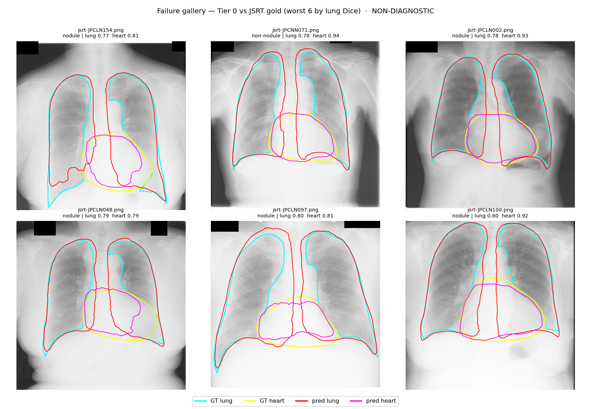

在瀏覽器裡對胸部 X 光做肺野與心臟解剖分割,並計算幾何心胸比(CTR)。模型與推論全部在你的裝置上執行。
在瀏覽器裡對胸部 X 光做肺野與心臟分割,並由分割結果計算幾何心胸比(CTR)。
臨床上單一 CTR 的意義有限,真正重要的是「隨時間的變化」。載入同一位對象的舊片與新片,比較幾何量測的區間變化(interval change)。非診斷。
內部是與 CheXmask silver(另一模型自動標註)比對;外部是與 JSRT gold(人工標註)比對。人工 gold 更接近真實準度,我們以它作為主要錨點。
| 設定 | 參考標準 | 肺 Dice | 心 Dice |
|---|---|---|---|
| 內部(NIH, n=200) | CheXmask silver | 0.835 [0.826–0.843] | 0.851 [0.837–0.865] |
| 外部(JSRT, n=246) | SCR gold 人工 | 0.856 [0.853–0.858] | 0.918 [0.915–0.923] |
失敗不是隨機的:集中在心臟後方/縱膈交界與肋膈角/肺底。心臟輪廓大多吻合。

本 demo 使用的模型、資料集與臨床參考的原始出處。醫療領域的每一項數字都應可追溯到來源。